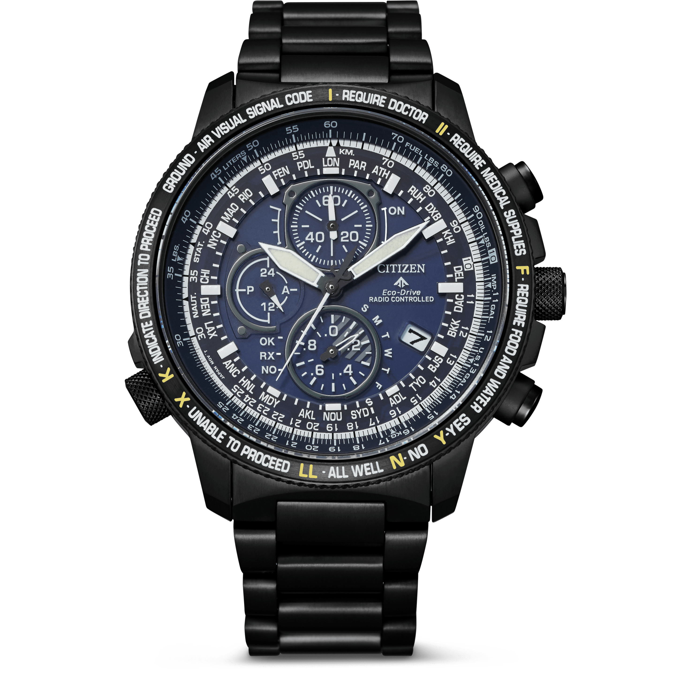
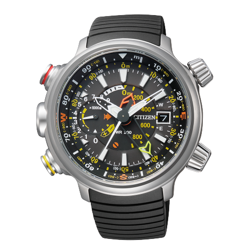
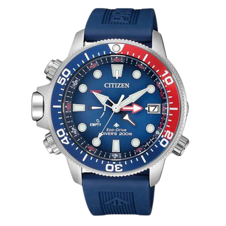
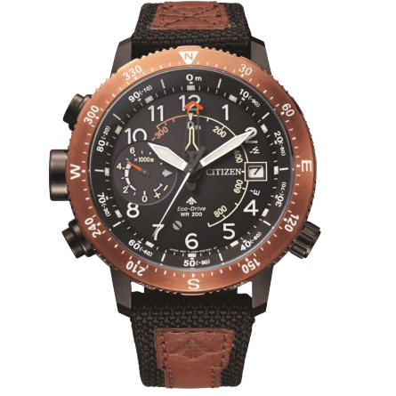
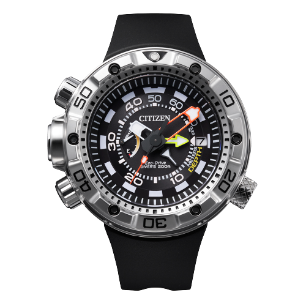
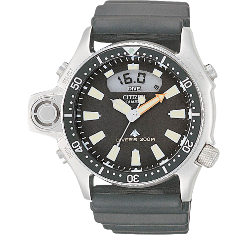

Citizen je japanska časovničarska kuća osnovana davne 1918. godine. Ime „Citizen“ odabrano je u želji da se CITIZEN satovi približe srcu svih ljudi širom planete. Danas je CITIZEN upravo to – omiljeni sat ljudi širom planete. CITIZEN je najveći proizvođač satnih mehanizama i čak dve trećine svih satova u svetu pokreće CITIZEN-ova Miyota. Iako je većina satova „pomalo“ CITIZEN, samo satovi prozvedeni u Japanu nose na brojčaniku i oznaku CITIZEN - simbol neprikosnovenog kvaliteta i napredne tehnologije.
|  |  |  |
| CITIZEN PROMASTER SKY AT8195-85L Materijal - Super titanijum Narukvica - Super titanijum Funkcije - Antimagnetik, dani u nedelji, datumar, DST funkcija, indikator rezerve snage, perpetual kalendar, svetsko vreme, štoperica Mehanizam - Eco drive Staklo - Safirno antirefleks Cena - 98591 RSD |
CITIZEN PROMASTER LAND ALTICHRON BN4021-02E Materijal - Titanijum Narukvica - Guma Funkcije - Altimetar, datumar, kompas, rezerva snage 330 dana Mehanizam - Eco drive Staklo - Mineralno Cena - 72241 RSD |
CITIZEN PROMASTER MARINE BN2038-01L Materijal - Čelik Narukvica - Silikon Funkcije - Alarm za dekompresiju, datumar, dubinometar, rezerva snage 330 dana Mehanizam - Eco drive Staklo - Mineralno Cena - 55241 RSD |
|  |  |  |
| CITIZEN PROMASTER LAND BN4049-11E Materijal - Čelik Narukvica - Koža, tekstil Funkcije - Altimetar, datumar, kompas, rezerva snage 330 dana Mehanizam - Eco drive Staklo - Mineralno Cena - 55241 RSD |
CITIZEN AQUALAND BN2021-03E Materijal - Čelik Narukvica - Guma Funkcije - Alarm, datumar, dubinometar, rezerva snage 330 dana Mehanizam - Eco drive Staklo - Mineralno Cena - 65441 RSD |
CITIZEN PROMASTER MARINE JP2000-08E Materijal - Čelik Narukvica - Guma Funkcije - Alarm, dani u nedelji, datumar, dubinometar Mehanizam - Kvarcni Staklo - Mineralno Cena - 41293 RSD |